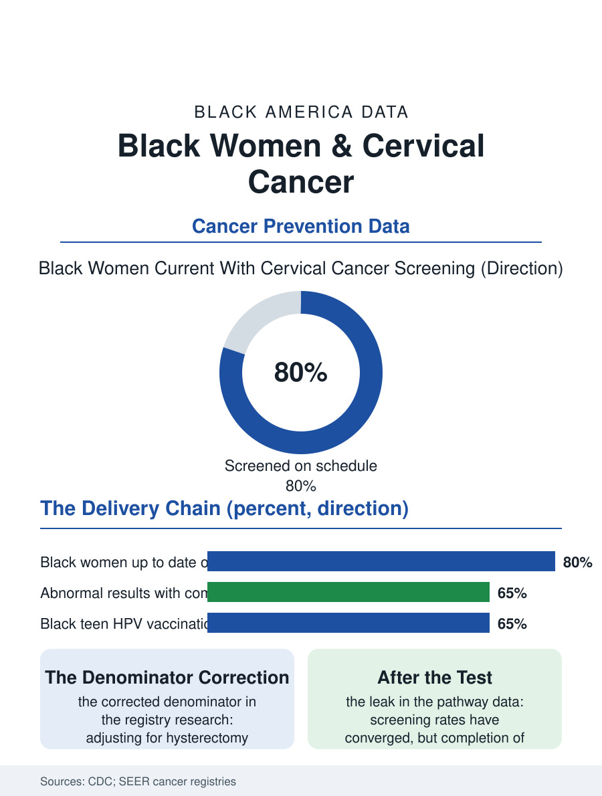

Black Public Health
The Last Mile: Black Women and Cervical Cancer
A nearly eliminable cancer persists in specific counties and populations: screening converged, but follow-up after abnormal results did not. The cervical file.

Cervical cancer is the rare cancer that medicine knows how to nearly eliminate: a vaccine prevents the infections that cause it, a screening test catches its precursors years in advance, and treatment of those precursors is minor and definitive. Its persistence in the data is therefore a pure measure of delivery, and the delivery fails unevenly: Black women develop cervical cancer at higher rates than white women and die of it at rates higher still, in the cancer registries' long record. This article reads the cervical file.
Screening's Success and Its Remainder
The screening story begins with a triumph: the Pap test's spread across the twentieth century cut cervical cancer incidence dramatically in every group the registries track, and overall screening rates among Black women now measure at or above white women's in the national health interview data, a fact that surprises readers of disparity files and directs attention to where the remaining gap actually lives. It lives after the test. The pathway from an abnormal result to a completed colposcopy to treatment carries the disparity: follow-up completion data show Black women lost at higher rates in the interval between the abnormal finding and the diagnostic appointment, the same navigation gap the colorectal file records, produced by the same machinery, scheduling friction, transportation, insurance churn, and clinics whose reminder systems reach stably housed patients best. Incidence itself is also subtly miscounted in the standard comparisons: hysterectomy rates differ by race, and when researchers correct the denominators, removing women without cervices from the at-risk population, the Black incidence and mortality gaps widen rather than shrink, a methodological finding that should caution every reader of the uncorrected rates. The cancer that results presents at later stages in Black women in the registry data, converting a preventable disease into the survival file's familiar gradient.
The Vaccine's Slow Ramp
The HPV vaccine, recommended in early adolescence, prevents the viral infections responsible for the overwhelming majority of cervical cancers, and its coverage data write the file's forward chapter. Adolescent vaccination rates among Black teens have run comparable to or above national averages in several recent survey years, a genuine delivery success attributable to the school and public clinic channels through which Black adolescents reliably pass. The gaps in the vaccine file are elsewhere: series completion behind initiation, the catch-up cohort of women now in their twenties and thirties who aged past the original recommendations, and the adult women for whom screening remains the only protection. The vaccine's existence has also complicated the screening message in a way the communications research documents: vaccinated patients and some clinicians discount the continued need for screening, though the vaccine does not cover every oncogenic type and its first cohorts are only now reaching the ages where screening matters most. The elimination targets set by the World Health Organization, vaccination, screening, and treatment thresholds treated as a single campaign, give the file its frame: the United States approaches the targets unevenly, with the subpopulations furthest from them, rural Black women in the South above all, identifiable by name in the county-level registry maps, which show cervical cancer persisting as a disease of specific counties rather than of the nation generally.
A Preventable Cancer's Ledger
The treatment chapter, once cancer is diagnosed, follows the survival file's standard machinery: stage at diagnosis explains much of the mortality gap, and within stages, treatment completion, radiation courses finished on schedule, carries the rest, sensitive to the same transportation, lodging, and work variables that govern every daily-treatment cancer. The survivorship file adds fertility's specific weight: cervical cancer strikes younger women than most cancers, and its treatments can end fertility, so the prevention failure's cost is denominated partly in the children the maternal file will never count. The cervical file closes with an assessment few pages in this atlas can make: every element required for elimination exists, is paid for by existing programs for the uninsured, and is more than half delivered. What remains is the last mile machinery, follow-up completion, reminder systems that survive a phone number change, colposcopy capacity in the counties on the map, and vaccination of the catch-up cohort, all logistics, all solvable, all measured in the registry each year in the most legible possible units. The registries will report whether the last mile got built. The women in the counties on that map are the file's readers, and its deadline.
More in Black Public Health
Hypertension Among Black Adults: Prevalence, Control, and Consequences
About 55 percent of Black adults have hypertension — the highest rate of any U.S. group. Prevalence, onset, control, and the stroke, heart, and kidney consequences in the data.
Diabetes Among Black Adults: Prevalence and Complications
Nearly one in five Black adults has diabetes, diagnosed or undiagnosed — and its complications fall with particular weight. The CDC data on prevalence, control, and outcomes.
Black Life Expectancy: The Gap at Birth and Its Causes
Black life expectancy at birth is about 73 years, roughly five years below the national figure — the summary measure of every health gap in this section. The CDC data.
Source: Centers for Disease Control and Prevention screening data; National Cancer Institute SEER registry; U.S. Preventive Services Task Force recommendations.